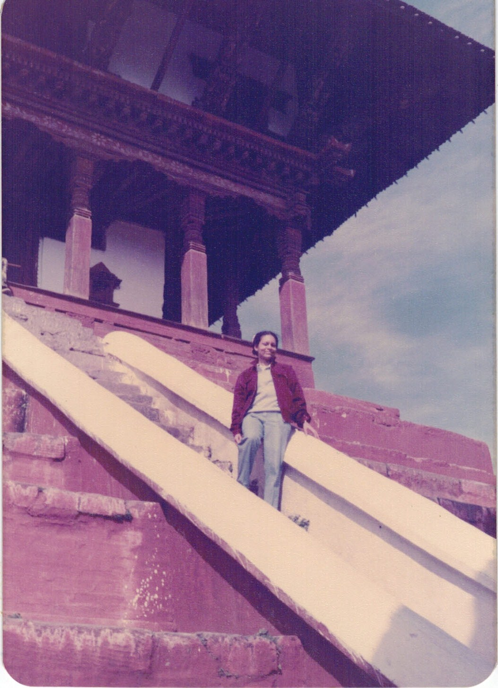
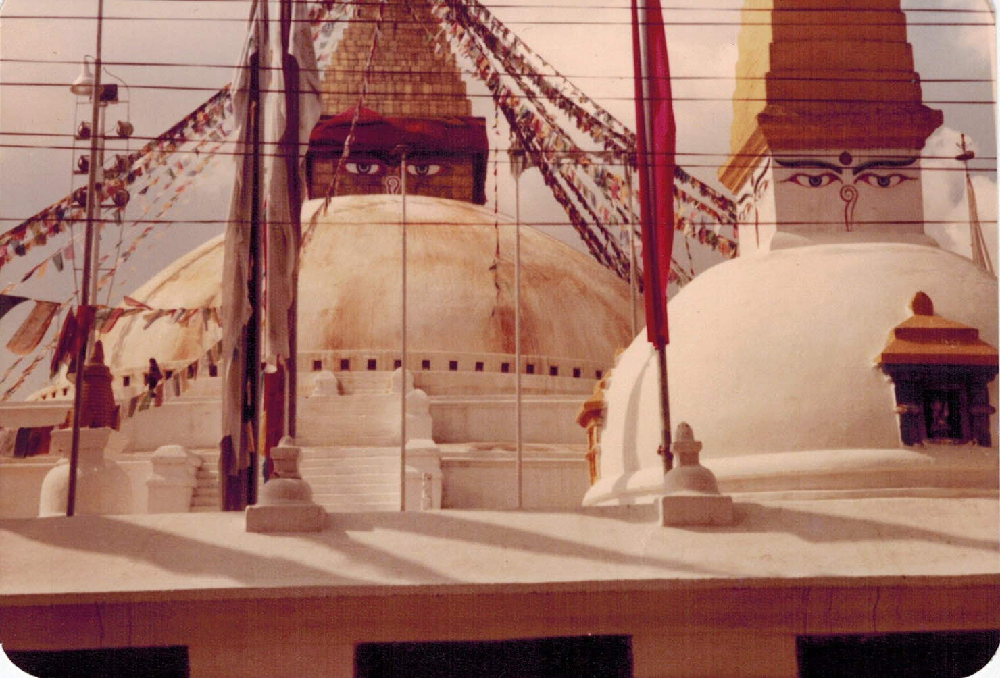
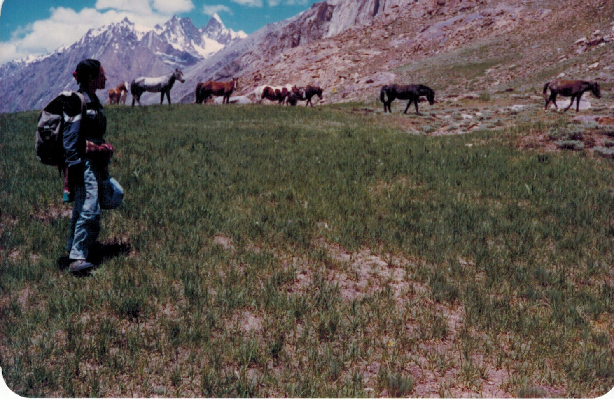
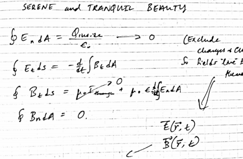

| Home | Solid-bar Wind Chimes | Chime Trees | Tubular Wind Chimes | About |
|---|
"There is geometry in the humming of the strings; there is music in the spacing of the spheres."
—Pythagoras
Richard Feynman famously asked his students to think of one sentence to pass on to the future of humanity given all other scientific knowledge was lost.
Feynman's answer: "The universe is made of atoms." To Feynman, the atomic theory was "efficient" because quantum mechanics reveals both classical mechanics and electromagnetism in its respective ℏ → 0 and m → 0 limits.
My answer: "The universe is musical." This worldview, popularized by Pythagoras, speaks to me deeply—I have noticed connections between nature and music since my childhood—but it moreover hints at humankind's biggest discoveries.
Interpreting the word "musical" as "wavelike" (i.e., characterized by period, frequency, harmonics, etc.) gives the Copernican model (observing the periodicity of planetary motion), the Fourier transform (from frequency space), Maxwell's equations (noting electromagnetic waves), and quantum field theory (representing the universe as harmonic oscillators). In fact, music continues to inspire theoreticians as they formulate field theories of symmetries higher than the Standard Model.
While physicists hold the Pythagorean philosophy up to theory, musicians breathe the Pythagorean spirit into art, the limit of scientific experiment. Handcrafting wind chimes involves both theory and art, challenging my intellect and my ears to perceive music in everything. It is an exercise for the soul.
These resources...
...places...
...and people...
...have guided me on this journey.
—Chirag
Prayer wheels in the Himalayas
Temple in Kathmandu
Buddhas in Nepal
Swayambunath
Ladakh
Notes from Physics II. "Light," the meaning of my name.
3rd birthday party